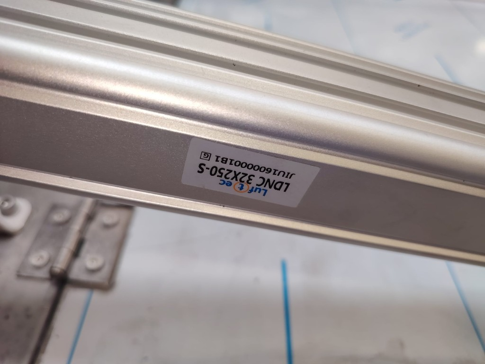

Rotational pnömatik — fotoğraftaki makine
3/4 görünüş foto 1 kamerası. İki silindir, L ayak, kulak, makara, orta dikme. Stick-figure değil. · Sıfırdan giriş — neden geç / neden sert

Kapak yatay, mil uzun, iki kulak kapak üstünde.

Kapak dikey, mil kısa, L ayak tankta, makara menteşede.
Makine — 3/4 (foto 1 açı) + yan kesit
3/4 görünüş
Yan kesit — HAB üçgeni fotoğraftaki yerinde
Hareket
Pnömatik — piston, valf, D8

Bu makinedeki piston
Luftec LDNC 32×250-S · ISO 15552 · Ø32 · strok 250 mm · mil Ø12 · port G1/8. Fotoğraftaki etiket. S = standart gövde (PPV yastık bu kodda yok).
| Parça | Kod | Ne işe yarar |
|---|---|---|
| Piston | LDNC 32×250-S × n | Mil uzar → kapak yatay. Mil kısalır → kapak dikey. |
| Valf | 4V230E-08 | 5/3, çift bobin, port 1/4". Orta konum E = boşaltma. Katalog debi ~890 NL/dk. |
| Hortum | D8 | PU 8 mm dış, varsayılan iç 5 mm. Boy sağ panelden değişir. Sol / sağ eşit olsun. |
Smooth hareket — yapman gerekenler
Formüller — adım adım
Yedi adım: nokta → silindir boyu → strok → kol → yerçekimi → kuvvet → süre. Sağdaki ölçüler “Bu anda” kutusunu doldurur.
Noktaları koy
Menteşe H orijin. Kapak yalnız H etrafında döner. θ = 0° yatay (tank kapalı), θ = 90° dikey (yükleme).
B = piston kulağı, H’den r. A = L-ayak, tankta sabit.
Çıktı: her açıda B’nin yeri. A değişmez.
Silindir boyunu ölç — s(θ)
Piston yalnız A ile B arasındaki mesafeyi değiştirir.
θ = 0° → s uzun (mil dışarı, kapak yatay). θ = 90° → s kısa (mil içeri, kapak dikey).
Strok sığar mı?
Pistonun gitmesi gereken yol, iki uçtaki s farkıdır. Katalog stroğundan küçük kalmalı; pay ≥ 8 mm.
Pay negatifse 90° bitmez. Pay < 8 mm ise montaj + yastıksız S gövde riskli.
Kuvvet kolu h
Silindir kuvveti A–B doğrusunda. Moment kolu, H’den bu doğruya inen diktir.
h küçülürse aynı tork için daha çok F gerekir. h ≈ 0 ise ölü nokta.
Yerçekimi momenti
Ağırlık merkezi H’den L/2. Moment kapağı yataya çevirir (tankı kapatır).
Yatayda (0°) en büyük. Dikeyde (90°) neredeyse sıfır — dikeyde tutmak kolay, yataya bırakmak tehlikeli.
Kaldırmak = çekmek
Dikeye kaldırmak milin kısalmasıdır → mil odası kuvveti Fçekme. n silindir paylaşır, güvenlik 1,3.
Yetmezse çap büyüt. 6 barı zorlama. Uzama (yataya inme) yerçekimi yardımcı olduğu için ayrı kontrol edilmez — fren gerekir (Adım 7 + şema).
Debi ve süre
4V230E-08 ≈ 890 NL/dk. D8 uzadıkça efektif debi düşer. Kısıcısız süre hedeften kısaysa kapak çarpar.
tmin < thedef ise egzoza kısıcı (meter-out) koy; iğne ile t → thedef.
Bu anda — senin sayılar
Piston girişleri — D8 hava + D4 plot şeması
Her LDNC girişinde iki hortum vardır: kalın D8 esas (iş havası) ve ince D4 plot (çek valfi açan pilot). Makinede 2 piston; şema birini gösterir, diğeri aynı, T1/T2’ye paralel bağlanır.
Nasıl çalışır
- Bobin A (HAT A). Kapak odasına D8 basılır. Aynı anda mil-D4 plot, mil portundaki çek valfi açar. Mil odası iğneden egzoz olur → mil uzar, kapak yerçekimiyle yataya iner. İğne = inme hızı.
- Bobin B (HAT B). Mil odasına D8 basılır; çek valf serbest doldurur (yay yönü). Kapak odası D8 + D4 ile boşalır → mil kısalır, kapak dikeye kalkar.
- Valf orta E veya hava kes. 4V230E her iki odayı tahliye eder. Çek valf mil odasını kilitler: kapak dikeyde kalır, yataya düşmez. Orta konumu durdurucu sanma — kilidi valf değil çek valf yapar.
- İkinci piston. Aynı şema. Sol ve sağ D8’ler T1/T2’ye paralel, eşit boy. İğne turları aynı; yoksa kapak yamulur.
Kullanılacak ürünler
| Ürün | Kod / ölçü | Adet | Nereye |
|---|---|---|---|
| Silindir | Luftec LDNC 32×250-S · G1/8 | 2 | Sol + sağ |
| Yön valfi | AIRTAC / Luftec 4V230E-08 · 5/3 E · 1/4" | 1 | Ortak A / B |
| Esas hortum | PU D8 (8×5) | 4 × boy | Her piston, 2 port |
| Plot hortum | PU D4 (4×2,5) | 4 × kısa | Her port dirsek → karşı T |
| D8 rakor | G1/8 → D8 | 4 | İki piston × iki port |
| D4 plot dirsek | G1/8 → D4 | 4 | Her girişte ince dirsek |
| Çek valf + iğne | G1/8 PCV / ASC tipi | 2 | Her pistonin mil portu |
| T birleştirme | D8 + D4 çapraz | 2 | T1 ve T2, valfe gidiş |
| Tek yönlü kısıcı | ASC G1/8 meter-out | 2–4 | Mil egzoz şart; kapak odası opsiyon |